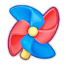
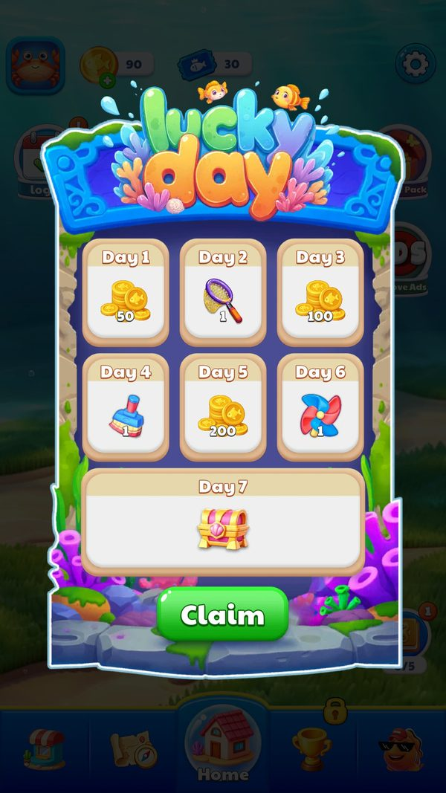
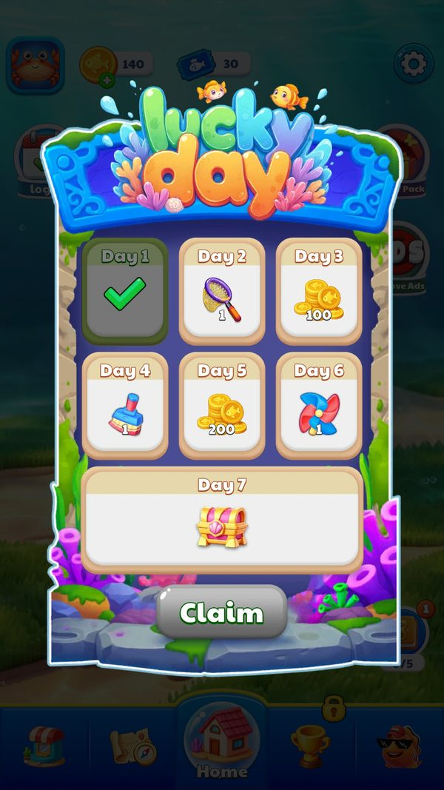
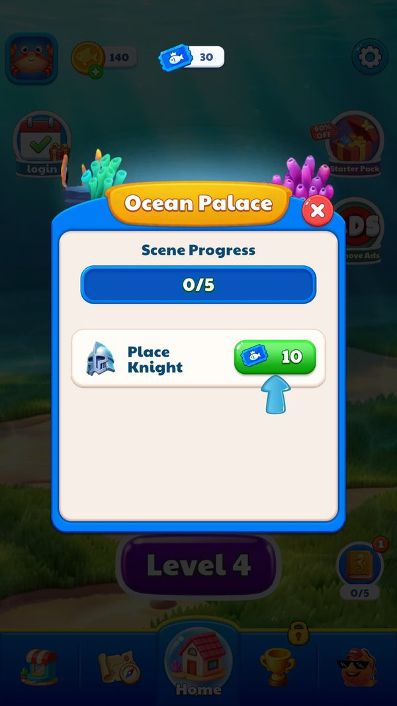
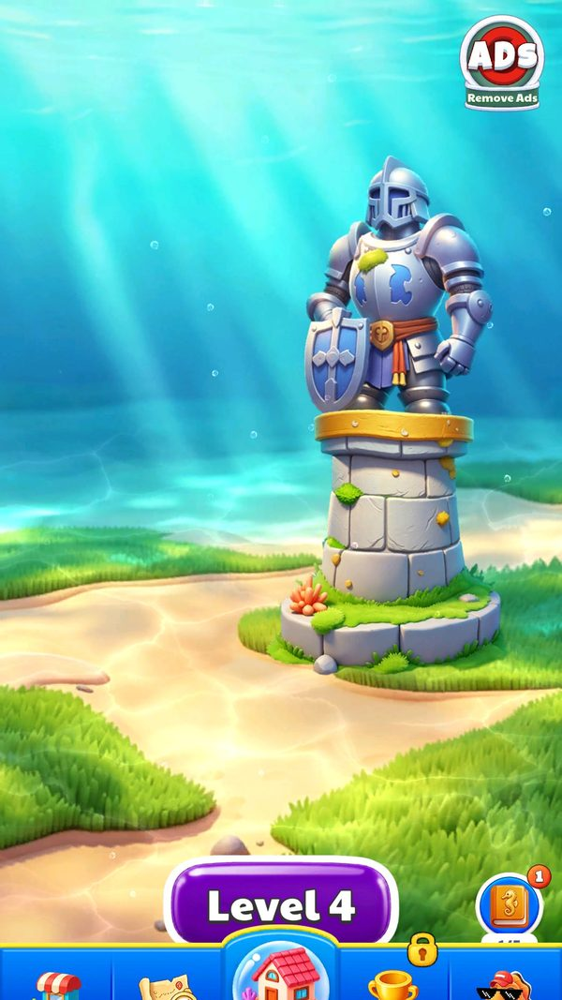
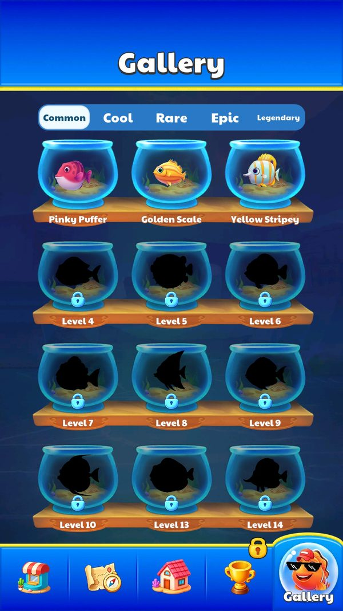
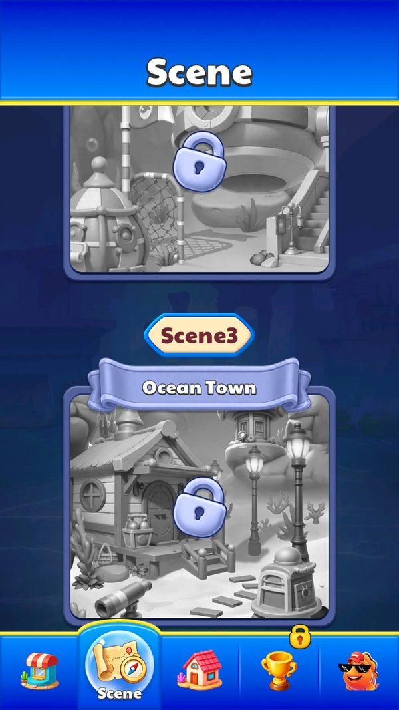

Các vòng lặp giữ chân ngoài màn chơi
Điểm danh, khu trưng bày, đồ giám, thành tựu và panel tự bật khi về Home giữ chân ra sao, và vé cá/vàng có đủ nuôi chúng không.
Bài này nói về những thứ kéo người chơi quay lại ngoài màn chơi: điểm danh, khu trưng bày, đồ giám, thành tựu. Đọc khoảng 6 phút. Ví dụ xuyên suốt là phiên chơi thật của JadeGill ngày 06/10; phần kinh tế dài hạn là 🧪 tính từ config thật.
- ✅ Giá trị thật: lấy thẳng từ code, config server thật, save hoặc ảnh chụp khi chơi.
- 🧪 Ví dụ minh họa: con số đầu vào giả định để thấy cơ chế chạy; cách tính trong ví dụ là cách tính thật trong code.
- Tên kỹ thuật (class, method, key) để trong ngoặc hoặc ở dòng bằng chứng, để tra code khi cần.
Tóm tắt nhanh
- Điểm danh tự bật mỗi ngày mới. Một vòng 7 ngày xen kẽ vàng và booster.Ví dụ ✅ JadeGill mở game 06/10 → popup “Lucky Day” → nhận ngày 1: vàng 90 → 140.
- Một vòng điểm danh cho 350 vàng + 6 booster. Phần lớn giá trị nằm ở booster.Ví dụ ✅ 2 Lưới (ngày 2 và 7), 2 Xoá sạch,

2 Làm mới. Tài liệu tính năng ghi “1 lưới” là thiếu. - Vé cá là tiền của khu trưng bày. Thắng màn được vé, vé dùng để đặt công trình.Ví dụ ✅ 30 vé sau 3 màn thắng; đặt Knight giá 10 vé → còn 20 (ảnh exhibition_place_knight).
- Về Home là bị nhắc tiêu vé. Panel khu trưng bày tự bật khi về từ màn chơi.Ví dụ ✅ Thua level 4, về Home → panel Ocean Palace bật sẵn “Place Seagrass 10”.
- Đồ giám là bản đồ phần thưởng phía trước. Ô chưa mở ghi rõ level sẽ mở loài đó.Ví dụ ✅ Gallery tab Common ở level 4: 3 loài đã mở (Pinky Puffer, Golden Scale, Yellow Stripey), các ô còn lại ghi “Level N”.
- Thành tựu chỉ để nhìn. Ba bộ đếm trong hồ sơ, không có quà.Ví dụ ✅ Save 06/10: First-Try Win 0, Collection Gallery 3, Scene Gallery 0 — dù đã đặt Knight.
- Meta cạn trước game. Khu trưng bày hết ở khoảng màn thắng 504, đồ giám hết ở level 754.Ví dụ 🧪 Giả định 10 vé/màn: 5.040 vé ÷ 10 = 504 màn; game có 1.300 màn.
Ví dụ xuyên suốt: một phiên của JadeGill ngày 06/10/2026
✅ Tài khoản test JadeGill, đã thắng level 1–3 từ 12/09, quay lại ngày 06/10 ở level 4. Số dư lấy từ ảnh chụp và save thật. Dòng cuối là 🧪 tính tiếp từ config.
| Lúc | Người chơi làm gì | Game phản hồi | Kết quả / số dư |
|---|---|---|---|
| Mở game | Vào Home | Nút Login có chấm đỏ; widget khu trưng bày góc phải dưới ghi 0/5 kèm badge 1 | ✅ 90 vàng, 30 vé |
| Ngay sau | — | Popup “Lucky Day” tự bật: lưới 7 ngày, ngày 7 là rương | ✅ ảnh sign_lucky_day |
| Claim ngày 1 | Bấm Claim | Ngày 1 có dấu tích, nút chuyển xám | ✅ 90 → 140 vàng; save SignCount 1, CurSignIn 1 |
| Bấm widget khu trưng bày | Mở Ocean Palace | “Place Knight” giá 10 vé, có bàn tay chỉ vào nút | ✅ Scene Progress 0/5 |
| Đặt Knight | Bấm 10 vé | Tượng Knight dựng trên bệ ngay ở Home | ✅ 30 → 20 vé; ArchitectureIds = [1]; 1/5 |
| Mở Gallery | Xem tab Common và Epic | 3 loài đã mở; Epic có 19 loài mở dần từ level 20 | ✅ Collection Gallery = 3 |
| Mở hồ sơ | Xem Stats | First-Try Win 0, Collection Gallery 3, Scene Gallery 0 | ✅ Scene Gallery chưa tăng dù đã có 1 công trình (suy luận: đếm khu đã xong) |
| Chơi level 4 | Thua 2 lần | — | ✅ vàng 140, vé 20, mạng 5 |
| Về Home | — | Panel Ocean Palace tự bật: “Place Seagrass 10” | ✅ 20 vé ≥ 10 nên nhiều khả năng đây là lý do bật (suy luận) |
| Giả định tiếp | Thắng thêm màn, mỗi màn 10 vé | Ocean Palace còn Seagrass 10 + Treasure 20 + Coral 20 + Castle 30 = 80 vé | 🧪 Còn 20 vé → cần thêm 6 màn thắng để xong khu 1 |
Trong một phiên ngắn, JadeGill chạm đủ bốn vòng lặp (điểm danh, khu trưng bày, đồ giám, thành tựu). Nhưng chỉ khu trưng bày đổi được thành thứ thấy được ngay; ba vòng kia hoặc cho rất ít (50 vàng), hoặc không cho gì.













Ảnh chụp minh họa (5)
Ảnh chụp từ game thật trên LDPlayer. Bấm ảnh để phóng to, phím ← → để chuyển ảnh.
Luồng hoạt động (10 bước)
Tóm lại: mở game ngày mới → Lucky Day tự bật → nhận quà → chơi màn → thắng: vàng + vé + loài mới → về Home → panel khu trưng bày tự bật → tiêu vé đặt công trình → đổi diện mạo Home và nền màn → xem Gallery / thành tựu → đẩy cloud
- 1Mở game ngày mớiClientGame so ngày lưu với hôm nay; khác ngày thì cho điểm danh lại và tự bật popup.Ví dụ ✅ Nút Login có chấm đỏ, popup “Lucky Day” tự bật ngày 06/10.
SignData; UIPanelSign.OnInit chuỗi SignIn, SignReward - 2Nhận quà ngàyPlayerCộng quà của ngày hiện tại, đánh dấu đã nhận, tăng tổng số lần điểm danh.Ví dụ ✅ Ngày 1 = 50 vàng: 90 → 140. Save ngay sau đó: IsSignIn true, SignCount 1, CurSignIn vẫn 1 (suy luận: tăng khi sang ngày).
SignConfig.json; SIGN_DATA_KEY (playerprefs_2026-10-06) - 3Thắng mànPlayerMỗi màn thắng cho vàng và vé cá, mở loài cá gắn với level đó trong đồ giám.Ví dụ ✅ Sau 3 màn thắng: 90 vàng, 30 vé, 3 loài. 🧪 Suy ra ≈ 30 vàng và 10 vé mỗi màn (FishTicketNumber = 10_10_10).
UIPanelWin (GameReward); FishTicketNumber; IllustrationConfig.LevelID; PLAYER_DATA_KEY.Achievement - 4Về HomeClientServer bật luồng đưa người chơi về Home từ level 6 (suy luận theo tên trường). Về Home thì panel khu trưng bày tự bật — nhiều khả năng khi đủ vé cho công trình kế tiếp (suy luận).Ví dụ ✅ backhome = 1_1_6_0. Thua level 4 với 20 vé → panel “Place Seagrass 10” tự bật.
SDKManager.jmv{¶ (backhome) → get_IsBackHome (0x72), get_BackHomeLevel (0x74) - 5Đặt công trìnhPlayerMỗi công trình có giá bằng vé cá; lần đầu có bàn tay hướng dẫn. Đặt xong là dựng ngay trên Home, kèm âm thanh riêng.Ví dụ ✅ Knight 10 vé: 30 → 20 vé, ArchitectureIds = [1].
ExhibitionArchitectureConfig.Tick, Sound; EXHIBITION_DATA_KEY_2 - 6Theo dõi tiến độ khuClientThanh “Scene Progress n/N”; khu kế tiếp hiện xám có ổ khoá. Điều kiện mở khu sau chưa đọc được.Ví dụ ✅ Ocean Palace 1/5 sau Knight; Scene 3 Ocean Town vẫn khoá.
ảnh exhibition_progress_1of5, exhibition_scene_locked - 7Đổi diện mạo màn chơiClientMỗi khu có ảnh nền màn chơi riêng, nên tiến độ trang trí đổi luôn nền màn.Ví dụ ✅ Khu 1 dùng nền bg_level_1, khu 2 dùng bg_level_2 … khu 14 dùng bg_level_13.
ExhibitionConfig.LevelBg, LevelBgMask - 8Xem đồ giámPlayerGallery chia 5 tab theo độ hiếm; ô chưa mở là bóng đen kèm level sẽ mở.Ví dụ ✅ Tab Epic: 19 loài, mở ở level 20, 60, 76, 145…
UIPanelIllustration; IllustrationConfig.Quality - 9Xem thành tựuPlayerBa bộ đếm trong hồ sơ, không có nút nhận quà.Ví dụ ✅ Save 06/10: {"1":0,"2":3,"3":0}.
AchievementConfig; PLAYER_DATA_KEY.Achievement - 10Đồng bộ cloudClientSau màn và giao dịch, game đẩy vé, khu trưng bày, công trình và thành tựu lên cloud; tiến độ điểm danh không đi theo.Ví dụ 🧪 JadeGill đổi máy → về lại 20 vé (tickCount, suy luận = vé cá) và Knight, nhưng điểm danh tính lại từ đầu.
CloudData 14 trường; GameCloud.UploadCloudArchive


Nhánh & ngoại lệ
| Khi | Thì | Ví dụ | Bằng chứng |
|---|---|---|---|
| Bỏ lỡ nhiều ngày điểm danh | Chưa đủ dữ liệu để biết bỏ lỡ có reset vòng hay chỉ dừng lại. | ✅ JadeGill vắng từ 12/09 tới 06/10 vẫn nhận ngày 1 (trước đó chưa nhận ngày nào). | SIGN_DATA_KEY 12/09 và 06/10 |
| Chỉnh đồng hồ máy | Chưa thấy điểm danh hỏi giờ server; nếu dùng giờ máy thì có thể nhận nhiều ngày liền (suy luận). | 🧪 Kéo giờ máy sang mai → popup Lucky Day bật lại → nhận ngày 2 (1 Lưới) ngay hôm nay. | gdd/Sign.json gaps; Rank GET /time; SDKManager.GetServerTimeStatic |
| Không đủ vé cá | Không đặt được công trình; vé chỉ đến từ thắng màn (chưa thấy nguồn khác). | 🧪 Có 20 vé, công trình kế giá 30 → phải thắng thêm 1 màn. | gdd/Exhibition.json gaps |
| Đã xây hết 147 công trình | Vé cá không còn chỗ tiêu nào trong client. | 🧪 Màn thắng thứ 505 trở đi: vé cứ tăng mà không dùng được. | ExhibitionArchitectureConfig.json (147 dòng) |
| Vượt level 754 | Không còn loài mới; Collection Gallery dừng. | ✅ Loài cuối cùng 航海鱼 ở level 754. | IllustrationConfig.LevelID tối đa 754 |
| Đổi máy | Khu trưng bày, vé, thành tựu về lại; điểm danh và cờ hướng dẫn mất. | 🧪 Đang ở ngày 5 điểm danh, đổi máy → quay về ngày 1. | CloudData; gdd/CloudSave.json |
| Server tắt luồng về Home (mặc định 0_0_7_0) | Không tự đưa về Home; người chơi phải tự về mới thấy khu trưng bày (suy luận). | 🧪 Mất mạng lúc mở game → thắng xong vào thẳng màn kế, ít gặp panel đặt công trình. | config_default_vs_live.json |
Bốn vòng lặp
| Vòng lặp | Nhịp | Đầu vào | Đầu ra | Lưu ở | Cloud | Ví dụ |
|---|---|---|---|---|---|---|
| Điểm danh | 1 lần/ngày, vòng 7 ngày | Mở app | 350 vàng + 6 booster mỗi vòng | SIGN_DATA_KEY | Không | ✅ ngày 1: +50 vàng |
| Khu trưng bày | Mỗi lần về Home | Vé cá | Công trình, đổi nền màn, Scene Gallery | EXHIBITION_DATA_KEY_2 | Có | ✅ Knight 10 vé |
| Đồ giám | Theo level | Thắng màn có loài | Ô sáng lên, Collection Gallery | suy ra từ level (suy luận) | Gián tiếp | ✅ 3 loài ở level 4 |
| Thành tựu | Theo tiến trình | Thắng lần đầu, sưu tầm | Chỉ bộ đếm | PLAYER_DATA_KEY.Achievement | Có | ✅ {"1":0,"2":3,"3":0} |
Điểm danh 7 ngày
Tóm lại: ngày lẻ cho vàng, ngày chẵn cho booster, ngày 7 cho đủ ba booster
Quy theo nhãn giá booster trong màn (Lưới 480 đã đo; Xoá sạch 420, Làm mới 550 là nhãn trong code), một vòng tương đương khoảng 3.250 vàng (suy luận).
| Ngày | Thưởng | Quy đổi vàng (suy luận) | Ví dụ |
|---|---|---|---|
| 1 |  50Vàng 50Vàng | 50 | ✅ JadeGill 06/10: 90 → 140 |
| 2 |  1Lưới bắt cá 1Lưới bắt cá | 480 | 🧪 đủ dùng Lưới 1 lần ở level khó |
| 3 | 100Vàng | 100 | — |
| 4 |  1Xoá sạch 1Xoá sạch | 420 | — |
| 5 | 200Vàng | 200 | 🧪 sau 5 ngày có 350 vàng, vẫn chưa đủ 1 lần hồi sinh |
| 6 |  1Làm mới 1Làm mới | 550 | — |
| 7 | 1Lưới bắt cá 1Xoá sạch 1Làm mới | 1.450 | ✅ ô rương to nhất trong lưới |
Kinh tế vé cá: khu trưng bày kéo dài bao lâu
Tóm lại: 10 vé/màn (suy luận) → khu 1 chỉ 9 màn → mỗi khu sau 31–43 màn → hết ở màn thắng 504
Cột cuối giả định 10 vé mỗi màn thắng (FishTicketNumber 10_10_10, khớp 30 vé sau 3 màn — suy luận) và không có nguồn vé nào khác.


| Khu | Tên (gốc) | Công trình | Vé của khu | Vé tích luỹ | Màn thắng tích luỹ (🧪) |
|---|---|---|---|---|---|
| 1 | 海底宫殿 Ocean Palace | 5 | 90 | 90 | 9 |
| 2 | 海底营地 | 10 | 310 | 400 | 40 |
| 3 | 海底小镇 Ocean Town | 12 | 390 | 790 | 79 |
| 4 | 海底乐园 | 10 | 380 | 1.170 | 117 |
| 5 | 海底市集 | 8 | 310 | 1.480 | 148 |
| 6 | 水上乐园 | 9 | 360 | 1.840 | 184 |
| 7 | 海底丛林 | 11 | 400 | 2.240 | 224 |
| 8 | 海底音乐台 | 11 | 430 | 2.670 | 267 |
| 9 | 游乐场 | 11 | 400 | 3.070 | 307 |
| 10 | 电影院 | 13 | 430 | 3.500 | 350 |
| 11 | 农场 | 12 | 380 | 3.880 | 388 |
| 12 | 话剧制片厂 | 12 | 370 | 4.250 | 425 |
| 13 | 博物馆 | 12 | 400 | 4.650 | 465 |
| 14 | 冰雪世界 | 11 | 390 | 5.040 | 504 |
Đồ giám theo dải level
Tóm lại: loài mới dày ở đầu, thưa dần; loài hiếm rải từ sớm
418 mục (386 mã cá khác nhau) gắn với 418 level từ 1 tới 754.
| Dải level | Số mục | Common | Cool | Rare | Epic | Legendary | Ví dụ |
|---|---|---|---|---|---|---|---|
| 1–20 | 19 | 17 | 0 | 1 | 1 | 0 | ✅ JadeGill level 4 đã mở 3 |
| 21–50 | 23 | 8 | 13 | 1 | 0 | 1 | 🧪 trung bình 1 loài mới mỗi 1,3 màn |
| 51–100 | 34 | 20 | 11 | 1 | 2 | 0 | — |
| 101–200 | 68 | 38 | 24 | 4 | 2 | 0 | — |
| 201–400 | 100 | 55 | 32 | 4 | 7 | 2 | — |
| 401–754 | 174 | 82 | 69 | 14 | 7 | 2 | 🧪 1 loài mỗi ≈ 2 màn |
Nhận xét kinh tế tổng thể
- Vé cá là tiền tiến bộ sạch. Một chỗ tiêu, không bán, không mua, không lẫn với vàng.Ví dụ ✅ Thanh trên của Home chỉ có hai số: vàng và vé cá.
- Giá công trình phẳng, nhịp đều mà dễ chán. Thu nhập vé không đổi theo level.Ví dụ ✅ Từ khu 2 trở đi mỗi khu 310–430 vé, tức 31–43 màn (🧪 10 vé/màn); khu 1 chỉ 9 màn.
- Meta không nuôi được booster/hồi sinh. Vàng ngoài màn chỉ đến từ điểm danh.Ví dụ ✅ Khu trưng bày, đồ giám, thành tựu đều không thưởng vàng.
- Ba mốc cạn nội dung. Khoảng 550 màn cuối chỉ còn màn chơi và bảng xếp hạng.Ví dụ 🧪 Khu trưng bày hết ở màn thắng 504, đồ giám ở level 754, màn chơi ở level 1.300.
Số liệu chính
| Chỉ số | Giá trị | Số liệu do | Nguồn |
|---|---|---|---|
| Một vòng điểm danh | 350 vàng + 2 Lưới + 2 Xoá sạch + 2 Làm mới | Client | SignConfig.json |
| Khu trưng bày | 14 khu · 147 công trình · 5.040 vé | Client | ExhibitionConfig.json; ExhibitionArchitectureConfig.json |
| Giá công trình | 10–60 vé (30 vé: 46 công trình, 40: 40, 20: 31, 50: 16, 60: 10, 10: 4) | Client | gdd/Exhibition.json |
| Vé cá mỗi màn thắng | 10 (suy luận) | Server | FishTicketNumber 10_10_10; 30 vé sau 3 màn |
| Màn thắng để xây hết | ≈ 504 (suy luận) | Client | 5.040 ÷ 10 |
| Đồ giám | 418 mục, 386 mã cá, level 1–754 | Client | IllustrationConfig.json |
| Số dư phiên 06/10 | vàng 90 → 140, vé 30 → 20 | Đo trên máy | ảnh home_level4, levelend_back_home_exhibition; playerprefs_2026-10-06 |
| Luồng về Home | live 1_1_6_0 · mặc định 0_0_7_0 | Server | config_default_vs_live.json |
Đánh giá
Thang 1–5 (với tiêu chí rủi ro, 5 = rủi ro cao). Trung bình: 3.0.
| Tiêu chí | Điểm | Nhận xét |
|---|---|---|
| Giữ chân ngày (D1–D7) | 3/5 | Điểm danh tự bật và có booster, nhưng không có chuỗi hay thưởng tăng dần sau tuần đầu: ngày 8 lại là 50 vàng (suy luận). |
| Mục tiêu dài hạn | 3/5 | Khu trưng bày và đồ giám đủ cho 500–750 level đầu; 550 màn cuối không còn meta. |
| Động lực từ phần thưởng | 2/5 | Đồ giám và thành tựu không cho gì; khu trưng bày chỉ thưởng bằng hình ảnh. |
| Nối với vòng chơi chính | 4/5 | Vé đến từ thắng màn, khu trưng bày đổi nền màn, panel tự bật khi về Home — ví dụ JadeGill thua vẫn được nhắc đặt Seagrass. |
| An toàn dữ liệu khi đổi máy | 3/5 | Khu trưng bày và thành tựu theo cloud; điểm danh thì không. |
- Một tiền tiến bộ riêng (vé cá) với một chỗ tiêu, hiểu ngay sau 3 màn đầu.
- Ô đồ giám ghi rõ level mở — cách rẻ để cho người chơi thấy lộ trình.
- Panel tự bật biến mỗi lần về Home, kể cả sau khi thua, thành một khoảnh khắc được thưởng.
- Không có gì sau ngày 7 (chuỗi, tháng, mốc 30 ngày).
- Đồ giám và thành tựu không thưởng, kể cả khi đủ một tab độ hiếm.
- Vé chỉ đến từ thắng màn; kẹt ở một màn khó là meta đứng theo.
- Hết khu trưng bày thì vé cá vô dụng; người chơi lâu năm mất lý do mở panel nào ngoài nút Level.
- Panel tự bật mỗi lần về Home có thể gây phiền nếu điều kiện bật không phải “đủ vé” như suy luận.
- Thêm mốc thưởng cho đồ giám (ví dụ đủ 5 loài Legendary → 500 vàng) và cho thành tựu (mỗi bậc 100–300 vàng hoặc 1 booster).
- Thêm chỗ tiêu vé sau khu 14: nâng cấp công trình, khu theo mùa, hoặc đổi 50 vé lấy 1 booster.
- Biến điểm danh thành chuỗi tăng dần (ví dụ ngày 7 tuần 2 = 3 booster + 300 vàng) và đưa SIGN_DATA_KEY vào CloudData.
- Dùng ba giá trị FishTicketNumber khác nhau theo độ khó màn (ví dụ 8/10/15) để thưởng màn khó.
Liên quan
Điểm danh 7 ngày Khu trưng bày Gallery — đồ giám cá Thành tựu Kinh tế: mạng, vàng, vé cá Hồ sơ, tên và trang phục Lưu trữ đám mây Khung giao diện 📊 Hai sự kiện đua FishRace và FlyRace 📊 Điểm chạm kiếm tiền trong màn chơi 📊 17 tham số online của ZMYSDK
Nguồn đã đọc
gdd/Sign.json, gdd/Exhibition.json, gdd/Illustration.json, gdd/Achievement.json, gdd/Economy.json, gdd/CloudSave.jsonappendix/default-configs.mdfeature_extras.json (Sign, Exhibition, Illustration, Achievement, Economy, Profile, CloudSave)screenshots/home_level4.jpg, sign_lucky_day.jpg, sign_lucky_day_claimed.jpg, exhibition_*.jpg, home_knight_placed.jpg, illustration_*.jpg, profile_my_profile.jpg, levelend_back_home_exhibition.jpgfacts/runtime/decoded/playerprefs.json, playerprefs_2026-10-06.json, config_default_vs_live.jsonConfigs/Default/SignConfig.json, ExhibitionConfig.json, ExhibitionArchitectureConfig.json, IllustrationConfig.json, AchievementConfig.jsonfeatures/UIPanelSign.md, UIPanelExhibition.md, UIPanelArchitecture.md, UIPanelIllustration.md, UIPanelWin.md, SDKManager.mdPseudoC/Assembly-CSharp/SDKManager.c (jmv{¶ – backhome; getter IsBackHome/BackHomeLevel/IsShowExhibition)